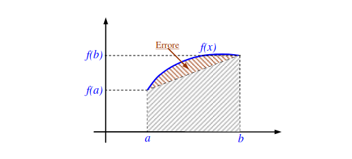

6. Integrazione numerica
Definizione del problema
Sia la funzione integranda (spesso non lineare, difficile da integrare) si vuole approssimare l'integrale definito in un intervallo L'approssimazione prende il nome di quadratura dell'integrale Dove:
- è il numero di nodi della quadratura
- sono i parametri della quadratura
- sono i nodi della quadratura
I nodi della quadratura sono sempre ugualmente spaziati, essendo che tale problema non risente della presenza di oscillazioni. Definiamo errore di quadratura la seguente quantità:
Grado di precisione o ordine polinomiale
Indichiamo con il più semplice polinomio di grado , ovvero . Si definisce grado di precisione o ordine polinomiale della quadratura quel numero tale che: Ovvero, l'ordine di quadratura indica fino a quale ordine polinomiale la quadratura sia esattamente uguale all'integrale definito. Si può dimostrare che il grado di precisione è un indice della precisione del metodo di quadratura, quindi più alto è, migliore sarà l'approssimazione.
Formule di Newton-Cotes (NC)
Le formule di Newton-Cotes sono delle formule di quadratura interpolatorie, i cui nodi sono tutti fissati ed ugualmente spaziati.
Formula di quadratura interpolatoria
A prescindere dalle formule di Newton-Cotes, che sono un caso particolare, una formula di quadratura interpolatoria determina una quadratura della funzione nell'intervallo nel seguente modo: Si determinano nodi distinti e si pone (essendo nota). Dopodiché si calcola il polinomio interpolante , che è semplice da integrare, e si pone: Ogni formula di quadratura interpolatoria che usi nodi ha, per costruzione, grado di precisione almeno .
Utilizzare il metodo dei coefficienti indeterminati
Possiamo ricavare le formule di NC ad punti utilizzando il metodo dei coefficienti indeterminati. In generale, con punti costruiamo un polinomio di grado , la cui quadratura avrà grado di precisione almeno (può essere anche maggiore). Quindi per ottenere i coefficienti, creiamo un sistema lineare in cui imponiamo che quadratura e polinomi semplici coincidano fino al grado .
Osservazione: i parametri non dipendono dai nodi, infatti le formule di NC di grado generico possono essere precalcolate e utilizzate direttamente. Il calcolo può, per l'appunto, essere svolto attraverso il metodo dei coefficienti indeterminati.
Regola del trapezio
La formula di NC a 2 punti nell'intervallo è detta regola del trapezio. Essendo che i due punti devono essere equispaziati, allora prenderemo . Il polinomio interpolante sarà di grado 1, quindi sarà una retta. Avremo quindi:
Dobbiamo determinare i parametri ed e per questo utilizziamo il metodo dei coefficienti indeterminati. Per vogliamo un grado di precisione almeno , quindi imponiamo:
Risolvendo il sistema otteniamo:
Sostituendo nella formula di quadratura, otteniamo:
Che è proprio la formula dell'area del trapezio:

Errore nella regola del trapezio
Osserviamo la seguente figura:

Se allora per determinare l'errore su un determinato punto possiamo utilizzare la formula dell'errore sull'interpolazione lagrangiana: Per calcolare l'errore di quadratura, quindi l'errore su tutto l'intervallo , possiamo integrare la precedente espressione: Nel caso della formula del trapezio abbiamo che e (per costruzione di e dato che ). L'errore nel trapezio sarà: Il teorema del valor medio enuncia che, siano due funzioni e non cambia di segno in , allora esiste un tale che Applicando il teorema all'espressione (13) possiamo far uscire dall'integrale sotto forma di , essendo che non cambia di segno. A questo punto risolviamo l'integrale analiticamente ed otteniamo:
Regola di Simpson
La formula di NC a 3 punti nell'intervallo è detta regola di Simpson. Il polinomio interpolante sarà di grado 2. Avremo quindi: Secondo le formule di NC i nodi sono equispaziati nell'intervallo . Per semplicità sia il punto di mezzo Rimappiamo l'intervallo da a (sono intervalli della stessa dimensione) e come 3 punti selezioneremo . Sostituiamoli nella formula: Il polinomio interpolante sarà di grado , quindi vogliamo che il grado di precisione sia almeno 2. Utilizziamo il metodo dei coefficienti indeterminati per ricavarci : Iniziamo con Poi Poi Mettendo a sistema: Risolvendo il sistema otteniamo: Sostituiamo nella formula di quadratura: Traslando tutto in otteniamo: Anche se viene imposto il grado di precisione almeno 2 durante la costruzione, il reale grado di precisione della regola di Simpson è 3 (provare per credere).
Errore nella regola di Simpson
Facendo esattamente gli stessi passi svolti per l'errore nella regola del trapezio, ma ponendo e otteniamo l'errore nella regola di Simpson: Il prodotto potrebbe cambiare di segno, quindi non possiamo sfruttare il teorema del punto medio. Se ognuno dei fattori avesse un segno definito, anche lo avrebbe.
Ricorriamo allo studio dell'errore sull'interpolazione hermitiana. Nel capitolo precedente abbiamo visto che se si conosce fino alla derivata -esima del nodo , allora il termine in nel calcolo dell'errore doveva essere elevato ad : .
Esclusivamente a scopo di calcolare l'errore, anziché calcolare andremo a calcolare poiché aggiungeremo l'ulteriore condizione sulla derivata nel punto medio:
Quindi avremo e modificheremo l'errore come segue: adesso ha segno costante, quindi possiamo quindi utilizzare il teorema del punto medio e ottenere: e risolvendo analiticamente l'integrale:
Grado di precisione ed errore nelle formule NC
Ricavando una formula di quadratura attraverso le formule di NC, vale che il grado di precisione è strettamente legato ad (grado del polinomio) ed in particolare:
- Se è pari,
- Se è dispari,
Si può dimostrare che, se è la distanza tra un nodo e l'altro ed è il numero di nodi, allora l'errore Per questo non conviene andare oltre . Per ottenere formule più accurate si utilizzano due tecniche:
- Quadrature gaussiane
- Divisione in sotto-intervalli, ovvero quadrature composte.
Quadrature composte
L'idea è quella di dividere in sotto-intervalli e di utilizzare una formula di Newton-Cotes per integrare ogni sotto-intervallo. Il numero di sotto-intervalli dipende da che tolleranza dell'errore impostiamo. Sia il numero di sotto-intervalli in cui si divide , allora:
Quadratura composta con regola del trapezio
Se si decide di utilizzare la regola del trapezio, allora la quadratura sarà: Notiamo che, una volta conosciuto l'errore di quadratura, possiamo andare a sommarlo per ottenere una quadratura più precisa. Apice e pedice nella parentesi quadra indicano che la quadratura viene svolta nel sotto-intervallo . Andiamo a sostituire le espressioni: Data la divisione degli intervalli, avremo che . Supponiamo per semplicità che i nodi siano ugualmente spaziati, allora la lunghezza di ogni singolo sotto-intervallo è: Sostituiamo nella formula: Che per la proprietà di linearità delle sommatorie può essere riscritta come: Concentriamoci sulla prima sommatoria: Sostituendo all'espressione precedente: Dato che non sappiamo valutare gli nella formula dell'errore, possiamo utilizzare il lemma del valor medio applicato alle sommatorie, che enuncia: Identificando con e ed applicando il teorema, si ha: Dove nella sommatoria si lascia un solo termine , che sommato volte ricostruisce la dimensione dell'intervallo che è . Quindi l'errore sarà Sostituiamo ed otteniamo: Sostituiamolo all'espressione principale della quadratura (43):
Calcolare il numero di sotto-intervalli nel Trapezio composto
Dalla regola dell'errore nel caso della formula del trapezio composto: Ricaviamoci : Non conosciamo ma possiamo studiare un upper bound calcolando il massimo di , quindi fissato una certa tolleranza , affinché la quadratura composta dei trapezi rispetti tale tolleranza bisogna selezionare tale che:
Calcolare il numero di sotto-intervalli nel Simpson composto
Dato l'errore calcolato sulla regola di Simpson: Trasformiamolo nell'errore della formula composta di Simpson: Anche qui possiamo ricavare :
N = \root{4}\of{\frac{f^{(IV)}(\eta) (b-a)^5 }{2880 E_{TC}(f)}}
Impostando una tolleranza e utilizzando il massimo di dobbiamo selezionare:
N \ge \root{4}\of{\frac{|f^{(IV)}|_{\infty} (b-a)^5 }{2880 \epsilon }}
Teorema di convergenza di una generica quadratura
Sia e sia una quadratura di grado dell'integrale nell'intervallo , se vale che
Le formule di NC non rispettano tale teorema poiché all'aumentare del grado, la grandezza dei parametri cresce.
Formule Gaussiane
Le formule di quadratura gaussiane sono costruite prendendo come incognite sia i nodi che i parametri . Le incognite saranno in totale ed il loro grado di precisione sarà . Il sistema che si dovrà risolvere sarà non lineare, ma utilizzeremo dei metodi per raggirare il problema.
Mid-point rule
Mid-point rule è il nome attribuito alla formula gaussiana di grado di precisione , ottenuto prendendo un solo punto, quindi , di conseguenza . Utilizzando la definizione di formula di quadratura avremo: Come fatto per le formule di Newton-Cotes, andiamo ad imporre che:
I calcoli degli integrali dei polinomi semplici li abbiamo già fatti prima. Vedasi regola del trapezio.
Da cui otteniamo: Osserviamo che è pari al punto medio dell'intervallo . Quindi sostituendo nella formula di quadratura abbiamo: L'interpretazione geometrica è la seguente:
Errore nella mid-point rule
Il procedimento per ricavare l'errore è lo stesso visto nelle formule di NC, in tal caso l'errore vale: Dove è il midpoint.
Formula Gaussiana
Per le incognite sono 4: . L'ordine della formula è . Sviluppiamo la formula: Per semplicità, poniamo . Imponiamo che il grado di precisione sia 3: Ricordando di aver cambiato l'intervallo, ricaviamo il sistema: Risolvendo il sistema otteniamo: Andiamo a sostituire nella formula ed otteniamo: Adesso possiamo rimappare sia i nodi che i parametri nell'intervallo attraverso la formula: Otterremo quindi la formula:
Teorema (nodi come zeri di un polinomio ortogonale)
Se è una formula di quadratura gaussiana e se i nodi sono gli zeri di un polinomio (quindi ortogonale su ) allora il grado di precisione della formula di quadratura è pari a .
Scorciatoia per il calcolo delle formule gaussiane
Per il teorema precedente, anziché considerare i nodi come incognite, possiamo utilizzare come nodi gli zeri di una classe di polinomi ortogonali, come i polinomi di Chebichev. Nel caso della formula gaussiana non sarebbe necessario risolvere il sistema non lineare!